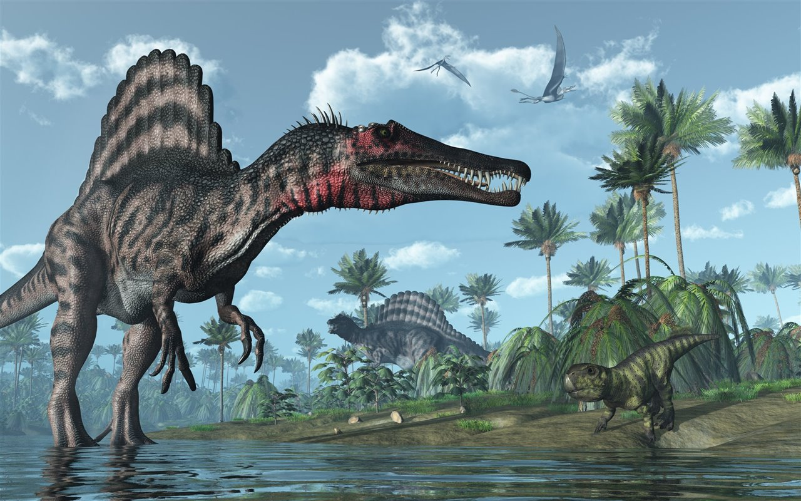
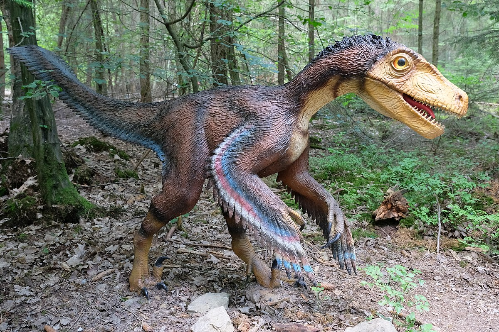
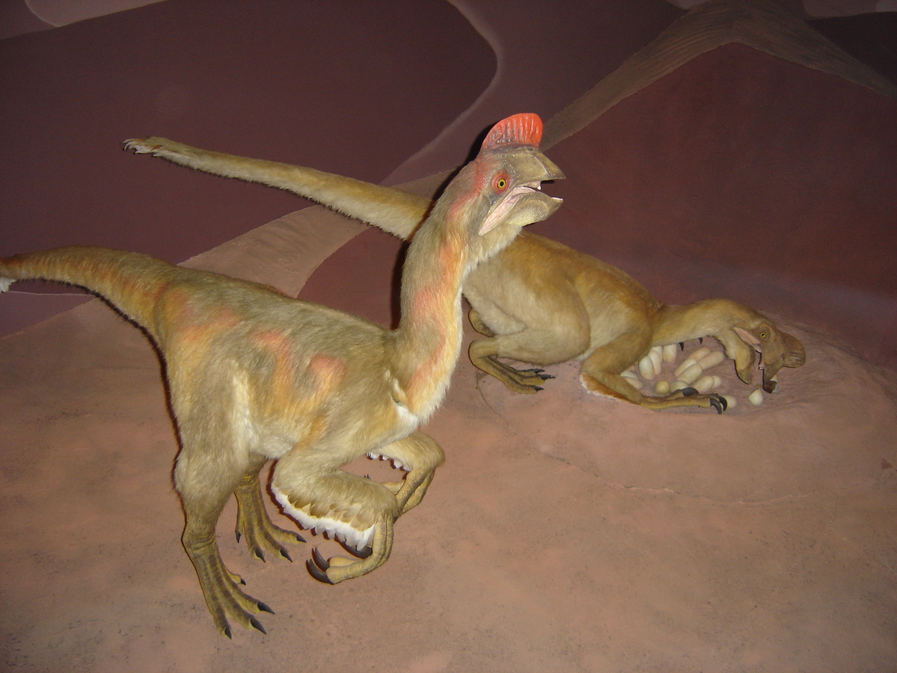
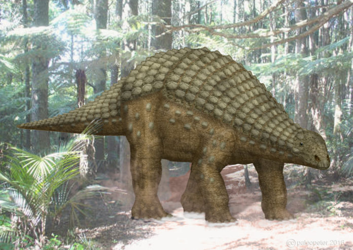
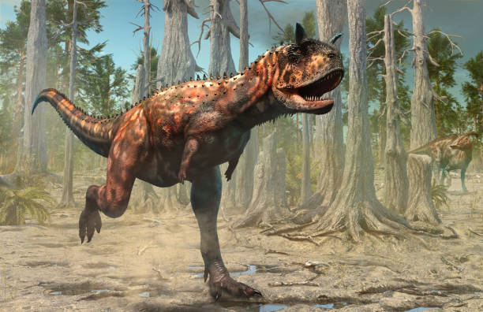

El Spinosaurus es la única especie conocida del género extinto Spinosaurus de dinosaurio terópodo espinosáurido, que vivió a mediados del período Cretácico, hace aproximadamente 99 a 93,5 millones de años, desde el Cenomaniense hasta el Turoniense, en lo que es ahora África. Este género se conoció inicialmente por los restos fósiles descubiertos en Egipto en la década de 1910 y descritos por el paleontólogo alemán Ernst Stromer. Los restos originales fueron destruidos durante los bombardeos de la Segunda Guerra Mundial, pero se ha recuperado material adicional a principio del siglo xxi. No existe claridad de si se trata de una o dos especies representadas por los fósiles reportados en la literatura científica. La especie más conocida es S. aegyptiacus descubierta en Egipto; sin embargo, una posible segunda especie S. maroccanus se descubrió en Marruecos. También se han encontrado restos en Argelia, Túnez y posiblemente de Níger y Libia. La mayoría de las últimas publicaciones consideran que la segunda especie e un sinónimo menor de la primera. El género contemporáneo de espinosáuridos Sigilmassasaurus también ha sido sinonimizado por algunos autores con S. aegyptiacus, aunque otros investigadores proponen que sea un taxón distinto. Otro posible sinónimo menor es Oxalaia de la Formación Alcântara en Brasil, lo que extendería el rango del génereo hasta Sudamérica.
Spinosaurus pudo ser el más grande de todos los dinosaurios carnívoros, más grande aún que el Tiranosaurio rex y el Giganotosaurus, a pesar de no compartir la contextura robusta de estos anteriores. Estimaciones publicadas en 2005, 2007 y 2008 sugieren que tenía 12,6 a 18 metros de longitud y 7 a 20,9 toneladas de peso. Nuevas estimaciones publicadas en 2014 y 2018, basadas en un espécimen más completo, respaldaron la investigación anterior y encontraron que el Spinosaurus podría alcanzar longitudes de 15 a 16 metros. Las últimas estimaciones sugieren un peso de 6,4 a 7,5 toneladas.1011 El cráneo del Spinosaurus era largo, bajo y angosto, similar al de un cocodrilo moderno y tenía dientes cónicos rectos sin estrías. Habría tenido extremidades anteriores grandes y robustas con manos de tres dedos, con una garra agrandada en el primer dígito. Las espinas neurales distintivas del Spinosaurus, que eran largas extensiones de las vértebras, crecían hasta al menos 1,65 metros de largo y probablemente tenían piel que las conectaba, formando una estructura similar a una vela, como la de Dimetrodon, aunque algunos autores han sugerido que las espinas estaban cubiertas de grasa y formaban una joroba. A esta estructura se le han atribuido múltiples funciones, incluyendo termorregulación y exhibición. Los huesos de la cadera de Spinosaurus estaban reducidos y las piernas eran muy cortas en proporción al cuerpo. Su cola larga y estrecha estaba profundizada por espinas neurales altas y delgadas y cheurones alargados , formando una aleta flexible o una estructura similar a una paleta. Se cree que pudo haberse alimentado de pescado; la evidencia sugiere que permanecía tanto en el agua como en tierra, como un cocodrilo moderno.
Se sabe que Spinosaurus comía pescado, y la mayoría de los científicos creen que cazaba presas tanto terrestres como acuáticas. La evidencia sugiere que era altamente semiacuático y vivía tanto en la tierra como en el agua al igual que los cocodrilos modernos. Los huesos de las piernas de Spinosaurus tenían osteosclerosis, alta densidad ósea, lo que permitía un mejor control de la flotabilidad y la cola en forma de paleta probablemente se usaba para la propulsión bajo el agua. Vivió en un ambiente húmedo de planicies intermareales y manglares y bosques junto con muchos otros dinosaurios, así como peces, crocodilomorfos, lagartos, tortugas, pterosaurios y plesiosaurios.
Desde su descubrimiento en 1915, Spinosaurus fue uno de los pretendientes para ser el terópodo más grande conocido. Tanto Friedrich von Huene en 1926 como Donald F. Glut en 1982, lo incluyeron entre los terópodos más grandes con 15 metros de longitud y un peso superior a las 6 toneladas. En 1988, Gregory S. Paul también lo consideró como el terópodo más grande con 15 metros de largo, pero estimando un peso inferior, de solo 4 toneladas.
Dal Sasso et al. en 2005, asumieron que Spinosaurus y Suchomimus compartían las mismas proporciones corporales en relación con la longitud de su cráneo, calculando de ese modo que Spinosaurus tenía entre 16 y 18 metros de longitud y entre 7 y 9 toneladas de peso. Las estimaciones fueron criticadas porque la estimación de la longitud del cráneo era incierta y asumiendo que la masa corporal aumenta con el cubo de la longitud del cuerpo, escalando a Suchomimus, que tenía 11 metros de largo y 3,8 toneladas métricas en masa, al rango de longitudes estimadas de Spinosaurus produciría una masa corporal estimada de 11,7 a 16,7 toneladas métricas.
François Therrien y Donald Henderson, en un artículo de 2007 usando una escala basada en la longitud del cráneo, desafiaron las estimaciones previas del tamaño del Spinosaurus , encontrando que la longitud era demasiado grande y el peso demasiado pequeño. Con base en longitudes de cráneo estimadas de 1,5 a 1,75 metros , sus estimaciones incluyen una longitud corporal de 12,6 a 14,3 metros y una masa corporal de 12 a 20,9 toneladas métricas. Las estimaciones más bajas para Spinosaurus implicarían que el animal era más bajo y más liviano que Carcharodontosaurus y Giganotosaurus. El estudio de Therrien y Henderson ha sido criticado por la elección de los terópodos utilizados para la comparación, la mayoría de los terópodos utilizados para establecer las ecuaciones iniciales eran tiranosáuridos y carnosaurios, que tienen una estructura diferente a la de los espinosáuridos, y por la suposición de que el Spinosaurus el cráneo podría tener tan solo 1,5 metros de largo. El incremento en la precisión para la estimación del tamaño de Spinosaurus requiere el hallazgo de fósiles mejor preservados, especialmente de los miembros del animal. Hasta nuevos hallazgos se estima un tamaño desde 15 metros según las partes del cráneo encontradas.
El cráneo tenía un hocico estrecho repleto de dientes cónicos rectos que carecían de estrías. Había seis o siete dientes, uno a cada lado del frente de la mandíbula superior, en los huesos premaxilares, y detrás de ellos otros doce en ambos maxilares. El segundo y tercer diente en cada lado en la mandíbula superior eran perceptiblemente más grandes que el resto de los dientes de los premaxilares, existiendo un espacio entre ellos que era ocupado por las piezas más grandes del maxilar anterior. El extremo del hocico que sostenía los grandes dientes anteriores se ensanchaba en forma de roseta, similar a la de los gaviales modernos. Además tenía una pequeña cresta delante de los ojos parecida a la de Ceratosaurus. También se podría decir que tiene la boca parecida a la de los cocodrilos.
Como espinosáurido, Spinosaurus habría tenido un cuello largo y musculoso, curvado en forma de sigmoide o S. Sus hombros eran prominentes y las extremidades anteriores grandes y robustas, con tres dedos con garras en cada mano. El primer dedo o "pulgar" habría sido el más grande. Spinosaurus tenía falanges largas y solo garras algo recurvadas, lo que sugiere que sus manos eran más largas en comparación con las de otros espinosáuridos.
Los primeros restos de Spinosaurus fueron encontrados en la Formación Baharija en el oasis del mismo nombre de Egipto en 1912, y nombrados por el paleontólogo alemán Ernst Stromer en 1915.6 Fragmentos de un segundo ejemplar, que incluían arcos neurales y parte de los miembros delanteros, fueron llamados «Spinosaurus B» en 1934 por el mismo Stromer, aunque este pensó que se trataba de otro tipo de terópodo como Carcharodontosaurus27 o Sigilmassasaurus. Algunos de los restos fueron dañados durante el transporte al Deutsches Museum, Múnich, Alemania, y el resto destruidos por los bombardeos aliados en 1944. Fue destruido concretamente "durante la noche del 24/25 de abril de 1944 en un bombardeo británico de Múnich" que dañó gravemente el edificio que albergaba el Paläontologisches Museum München, Colección Estatal de Paleontología de Baviera. Sin embargo, quedan dibujos detallados y descripciones del espécimen. El hijo de Stromer donó los archivos de Stromer al Paläontologische Staatssammlung München en 1995, y Smith y sus colegas analizaron dos fotografías del espécimen holotipo de Spinosaurus BSP 1912 VIII 19 descubierto en los archivos en 2000. Sobre la base de una fotografía de la mandíbula inferior y una fotografía de del espécimen completo montado, Smith concluyó que los dibujos originales de Stromer de 1915 eran ligeramente inexactos. En 2003, Oliver Rauhut sugirió que el holotipo del Spinosaurus de Stromer era una quimera, compuesta de vértebras y espinas neurales de un carcarodontosáurido similar al Acrocanthosaurus y un dentario de Baryonyx o Suchomimus. El análisis fue rechazado en al menos un artículo posterior.
Dos especies de Spinosaurus han sido descritas: S. aegyptiacus de Egipto y S. marocannus de Marruecos. S. marocannus originalmente fue propuesta por Russell como una nueva especie a partir de una vértebra del cuello. Específicamente, Russell afirmó que la relación entre la longitud del centro, cuerpo de la vértebra y la altura de la faceta articular posterior era de 1,1 en S. aegyptiacus y de 1,5 en S. maroccanus. Los autores posteriores se han dividido sobre este tema. Algunos autores señalan que la longitud de las vértebras puede variar de un individuo a otro, que el espécimen holotipo fue destruido y por lo tanto, no se puede comparar directamente con el espécimen de S. maroccanus y que se desconoce qué vértebra cervical es la que representan los especímenes de S. maroccanus. Por lo tanto, aunque algunos han mantenido la especie como válida sin muchos comentarios, aunque la mayoría de los investigadores consideran a S. maroccanus como una especie dudosa o como un subgénero sinónimo de S. aegyptiacus. La mayoría de los autores considera que una vértebra cervical puede variar de ejemplar a ejemplar y consideran a S. marocannus sinónimo de S. aegyptiacus.
| |
 | |
|  |  |  |